Deckhand try-on — real-browser test report
Eight sections swapped, an AI draft taken end-to-end, tuning/theme/flags/keep verified against source hashes — all driven in headless Chromium against a real Next.js site.
1 · What was tested
The skill ships no runnable site — tryon/test/fixtures/site has no app/layout.tsx, no PostCSS config and no lockfile (its tests stub node_modules). So I built a real 8-section bakery landing page (Navbar · Hero · Features · Pricing · Testimonials · FAQ · CTA · Footer) from that scaffold, plus Tailwind 4 semantic tokens, and wired it with the skill's own setup.
Four isolated labs were stood up so parallel agents could not corrupt each other's state (the personal library under ~/.deckhand/library is machine-wide, so keeping projects apart mattered):
| Lab | Project | Dev server | Try-on overlay | Used for |
|---|---|---|---|---|
| A | …\dh-tryon-lab\site | :3000 | :4010 | watching/HMR, protocol, wrapper anatomy, footer bug |
| B | …\lab-swap\site | :3010 | :4020 | swap across all 8 sections |
| C | …\lab-draft\site | :3020 | :4030 | AI draft end-to-end |
| D | …\lab-adjust\site | :3030 | :4040 | tune · site theme · flags · keep/save · clean |
div[data-dh-ui]; Playwright pierces it, so plain CSS and text selectors reach every control.Setup chain (all verified, exact outputs)
| Step | Observed |
|---|---|
doctor (fresh) | {"ok":true,"framework":"next","supported":true,"wired":false,"devServer":"http://127.0.0.1:3000","stampsInHtml":false,"tailwind":4,"tokens":{"primary":true,"muted":true,"border":true,"radius":true},"base":"radix","next":"run `setup`, then restart the dev server"} |
setup | {"ok":true,"config":"next.config.ts","patched":true,"restartDevServer":true} — original saved to .deckhand/tryon/backups/setup/next.config.ts.orig, runtime copied, .gitignore gained .deckhand/tryon/ |
| restart dev | 115 data-dh="file:line:col" attributes across 10 source files, 0 malformed, 0 in <head> |
doctor (wired) | "wired":true, "stampsInHtml":true, "next":"run `serve` and open its URL" |
serve --port 4010 | {"ok":true,"open":"http://127.0.0.1:4010","proxying":"http://127.0.0.1:3000"} — HTML carries <script src="/__dh/overlay.js" data-dh-token="…" defer> |
| catalog | 58 slot kinds with inventory for this project (hero 31, features 45, footer 23 …) totalling 980 base-compatible designs out of the 1,247 indexed; query --slot hero → total:31, hidden:21, top score 138 |
:3600). serve then dies with EADDRINUSE while the old overlay keeps answering — you can silently test the wrong site. I moved to :4010 and confirmed the proxy target by checking site-specific content every time.2 · Component swapping — 8 sections
Each section was picked by clicking its stamped element in the browser, the panel's slot guess recorded, 4 variants staged, then ←/→ cycled while hashing the whole source tree (excluding node_modules, .next, .deckhand).
| Section | Stamp | Guess | Staged | Fit pills ("your content n/N") | Verdict |
|---|---|---|---|---|---|
| navbar | components/navbar.tsx:12:5 | navbar ✓ | 4 | 5/5 · 5/5 · 5/5 · 5/5 | works |
| hero | components/hero.tsx:6:5 | hero ✓ | 4 | 4/4 · 4/4 · 4/4 · 4/4 | works |
| features | components/features.tsx:23:5 | features ✓ | 4 | 8/8 · 8/8 · 8/8 · 8/8 | works |
| pricing | components/pricing.tsx:20:5 | pricing ✓ | 4 | 12/12 · 12/12 · 10/12 · 10/12 | works (kept) |
| testimonials | components/testimonials.tsx:21:5 | testimonials ✓ | 4 | 7/7 · 7/7 · 7/7 · 5/7 | works |
| faq | components/faq.tsx:18:5 | faq ✓ | 4 | 7/7 · 7/7 · 7/7 · 7/7 | works |
| cta | components/cta.tsx:6:5 | cta ✓ | 4 | 3/3 · 3/3 · 3/3 · 2/3 | works |
| footer | components/footer.tsx:30:5 | footer ✓ | 0 | — | BROKEN (§8) |
Slot guessing was correct on all 8. Every section staged 4 variants from 4 different registries (tailark-oss, shadcnui-blocks, kokonutui …). Fit pills are coloured green when carried = total and amber when partial — and the numbers matched the CLI's own fit.carried / fit.of exactly.
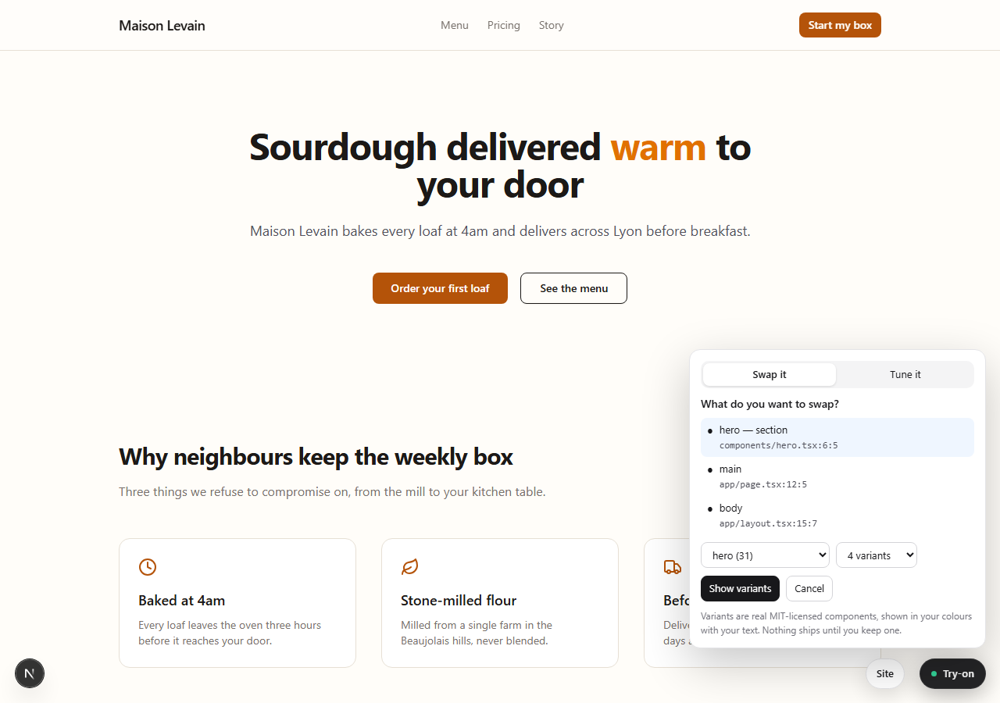
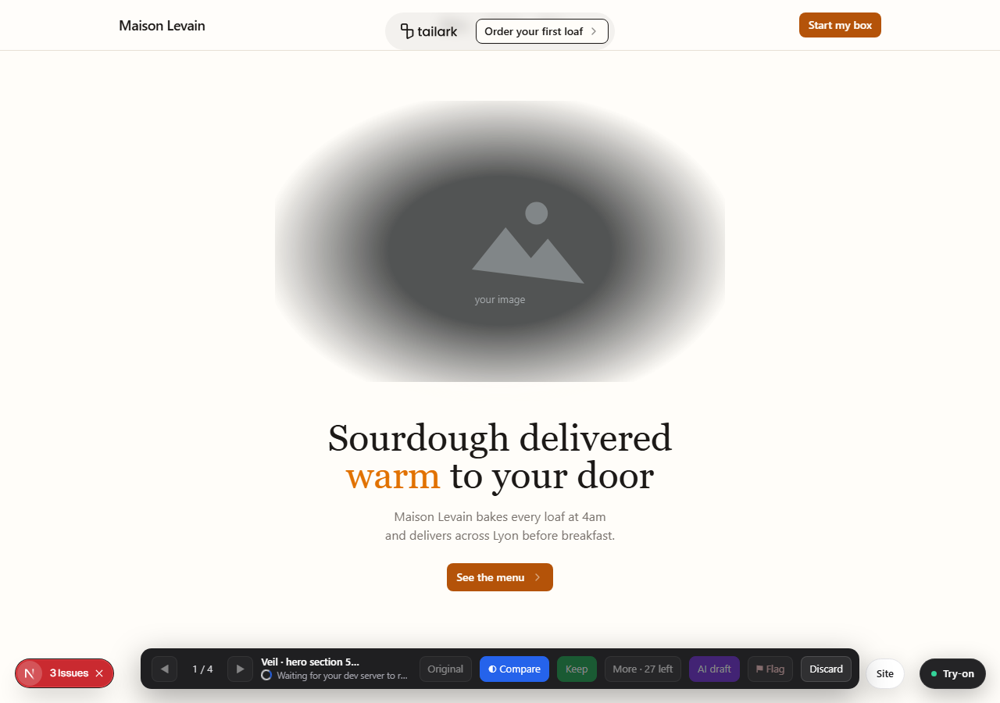
◀ 1 / 4 ▶, fit pill, registry + licence + demo-copy note, Keep · More · AI draft · Flag · Discard.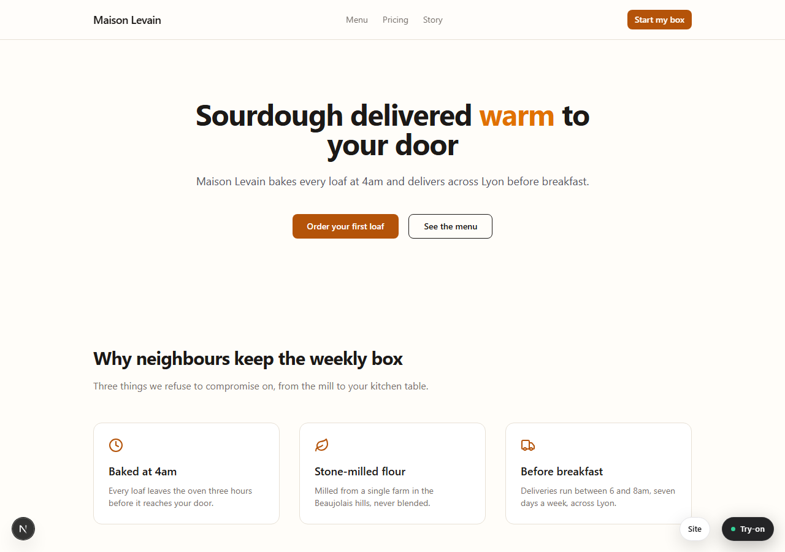
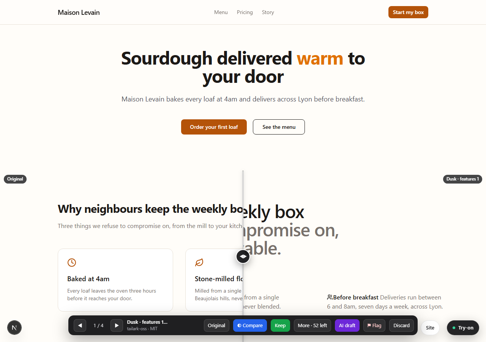
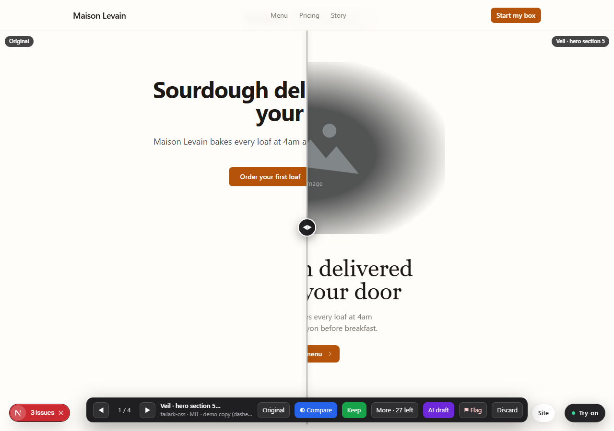
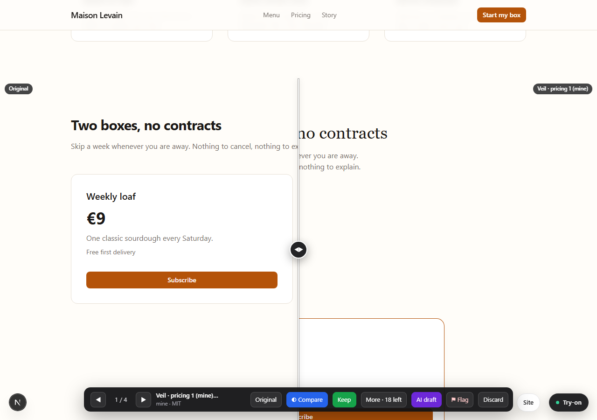
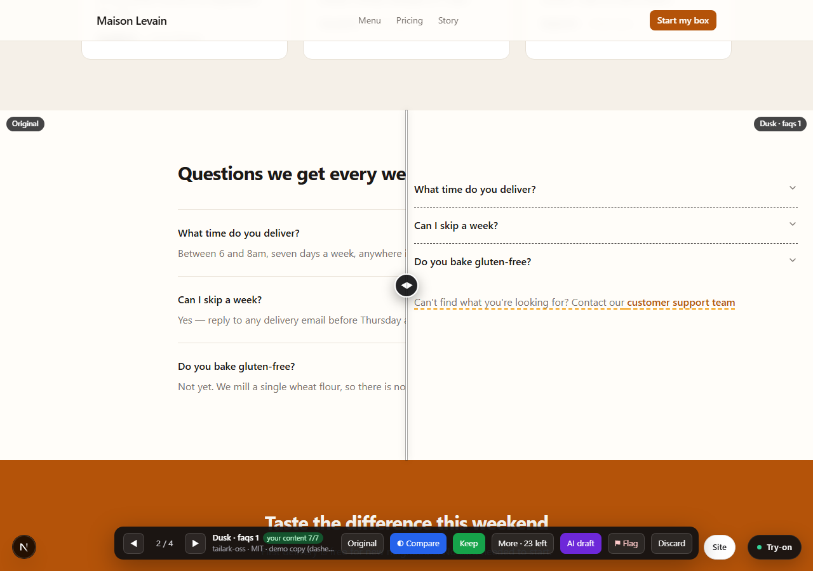
3 · What a swap actually writes
Staging a hero via the browser touched one pre-existing file (components/hero.tsx) plus 21 new variant files. The wrapper is exactly what the atlas describes:
<div data-dh-session="s1ce35" style={{ display: "contents" }}>
<div data-dh-variant="0" data-dh-label="Original" style={{ display: "none" }}>
<section id="pricing" …> ← the owner's JSX, untouched
</div>
<div data-dh-variant="1" data-dh-label="Veil · pricing 1" style={{ display: "contents" }}>
<DhVeilPricing1 content={{ heading1: <>Two boxes, no contracts</>,
list1: [{ name: "Weekly loaf", price: "€9", … }, { name: "Family box", price: "€24", … }] }} />
</div>
…variants 2..4, display: none
</div>
import DhVeilPricing1 from "@/components/dh-tryon/tailark-oss-veil-pricing-1/…" // dh-tryon:s1ce35| Claim | Measured |
|---|---|
| Owner content extracted before candidates are staged | owner[22] — the plans array was unrolled into concrete units: "Weekly loaf", "€9", "One classic sourdough every Saturday.", "Free first delivery", "Subscribe" ×2 plans |
| ONE wrapper edit per open | only components/hero.tsx changed among existing sources; the other 21 writes are new variant files |
| Variant 0 = original, hidden | data-dh-variant="0" … style={{display:"none"}} |
Imports tagged // dh-tryon:<id> | 4 tagged imports for 4 variants |
| Byte-copy backup written before disk is touched | backup sha256 51102931fb… == session.shaBefore |
File after staging == shaAfter | 5db823c1c1… == session.shaAfter |
| Cycling ←/→ performs zero writes | 0 files changed across 7 presses (verified by hashing the tree before/after) — reproduced on all 7 working sections |
| Discard is byte-exact | CLI: {"ok":true,"mode":"byte-exact"}; sha after == sha of .orig == original; session → discarded; staged folders and import tags removed |
| UTF-8 survives the rewrite | rewritten file is valid UTF-8, 0 mojibake bytes, the 6 € signs written into content props are e2 82 ac (the € seen in PowerShell output was a console-decoding artefact, not the file) |
| Rejected registries / poor fits are excluded, with reasons | footer: POOR_FIT (carries 1/6), POOR_FIT (carries 2/6), NEEDS_DEPS (motion) |
carried:10, dropped:[€9, €24], and indeed its binding put price: "One classic sourdough every Saturday." — the blurb landing where a price belongs. The metadata was accurate and the fit pill turned amber, so the owner is warned; but a visibly wrong variant still gets staged, which is what ⚑ Flag exists for.4 · Watching — HMR and overlay resilience
| Behaviour | Result |
|---|---|
| External source edit reaches the rendered DOM | 514 ms — hero.tsx edited on disk, heading changed to "…PIERCINGLY-HOT…" with no reload |
| Really HMR, not a reload? | window.__dhMarker set before the edit was still present after it; page load events stayed at 1 |
| Overlay survives the update | div[data-dh-ui] still attached, shadow root still contains .pill |
| Overlay re-attaches if the framework wipes it | host deleted programmatically → 0 immediately → back to 1 within 2.5 s (documented 1 s interval) |
| Source edit reverted | heading returned to "…warm…" and the DOM followed |
| HMR websockets reach the browser through the proxy | the edit landed while browsing :4010, i.e. proxied HMR works |
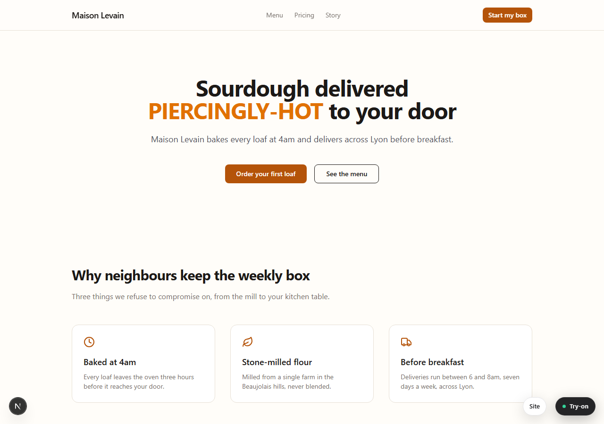
5 · Compare: two variants painted is by design
My first measurement flagged two painted variants at once (the original plus the chosen one), which looked like duplicated content. Reading overlay.js:116 resolved it: Compare is ON by default.
var cmpOn = true, cmpPos = 50; // before/after slider: on by default, remembered per browser
try { cmpOn = localStorage.getItem('dh-compare') !== '0'; } catch (e) {}| State | Measured |
|---|---|
| Compare ON (default) | wrapper → display:grid; original + active variant both display:block in grid-area:1/1; original clipped inset(0 50% 0 0) at z-index:1; knob + labels Original / Veil · hero section 5 visible → a genuine before/after split |
Compare OFF (c) | clearCompare() resets cmp.className='cmp' and .cmp{display:none}; exactly one variant gets display:contents, all others none |
| Cycling with Compare off | 1/4→Veil · 2/4→Hero 01 · 3/4→Dusk · 4/4→Mist · original→variant 0 — one at a time, 0 file writes |
| Counter wrap | 4/4 → original → 1/4 (wraps both ways with ←/→) |

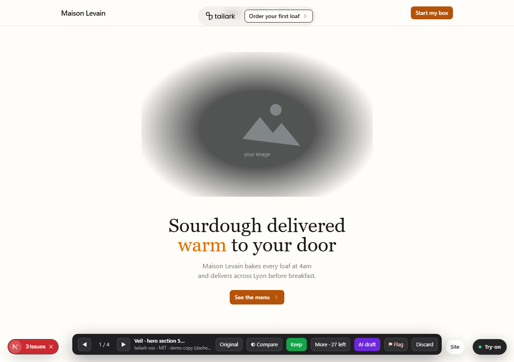
6 · AI draft — request → gates → labelled variant → keep
From the browser
| Step | Observed |
|---|---|
| Slot with no licensed designs | the blog option reads literally "blog — AI draft only"; the panel's primary button becomes Ask AI to draft one (class ai) |
| The offer | "No licensed blog designs exist for this site yet. Your AI agent can write one for this element. It will be labelled AI-generated. Deckhand checks it before you see it: your colours, all your words and links, no invented facts, nothing to install." |
| Request raised | id dm2ef3n2e51 (panel path) and dm2eiis67b8 (staged bar's AI draft button) → waiting panel: "AI draft requested · Waiting for your AI agent to write it… · Write the try-on AI draft <id>" |
| Polling | 8 draft-status calls in 8 s (12 recorded overall) — the overlay polls, the agent does not |
| After completion | bar shows AI draft · hero with a purple AI-generated pill and sub-line "written by your AI agent, not a licensed human design"; variant count became 1 / 5 so the AI draft joins ←/→ |
| Content | all 4 owner strings present, hrefs /order and #menu intact |
| Keep | Kept "AI draft · hero" → components/sections/ai-hero-draft-dm2eiis67b8/… + Save to my library + Done |
The gates — tested directly with 4 crafted drafts
| # | Draft content | Exit | Problems reported |
|---|---|---|---|
| A | only the heading + intro — drops 6 of 8 owner units, no links | 1 | 6 × DRAFT_DROPPED_CONTENT, each naming the exact missing unit (missing heading: "Baked at 4am" …), fit: {carried:2, of:8} |
| B | all 8 units verbatim, token classes only, no links | 0 | none — fit: {carried:8, of:8} |
| C | all 8 units + style={{color:"#ff6600"}} | 1 | DRAFT_RAW_COLOR — "draft.tsx:13 style uses a raw colour — use the site's token classes" |
| D | all 8 units + a link the owner never gave | 1 | DRAFT_LINK — "href \"/nope\" — links go only where the owner's did (none given)" |
| finish | draft B submitted | 0 | draft-done → session s463fc, variant ai/features-draft-dm40o6j240f, lic:"AI-generated", generated:true, ai_variant:1 |
The brief itself carries the full owner content: 8 units for the features section (2 top-level + 3 cards × 2), plus 10 explicit rules (use every unit verbatim, invent no facts, token colours only, allowed imports, placeholder images only, RSC/client rule, semantic HTML…). draft-done on a bad draft returns DRAFT_REJECTED, exit 1, listing the problems and the file to fix.
DRAFT_LINK first (fit stays null), so the owner fixes and re-runs to surface the drops. The atlas says a rejection "lists every problem" — it lists every problem of the failing stage.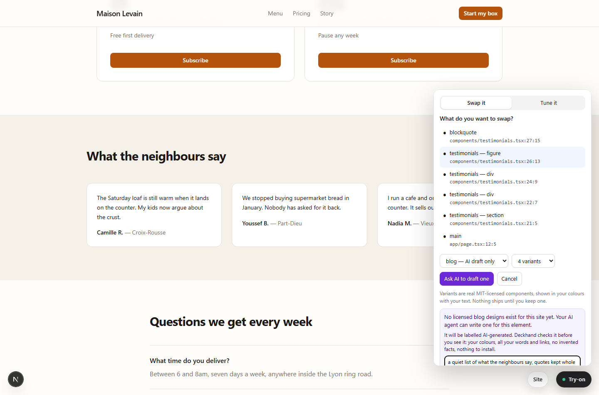
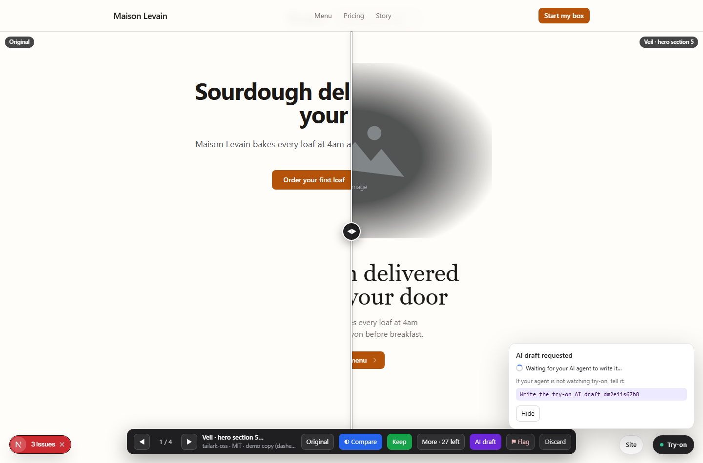
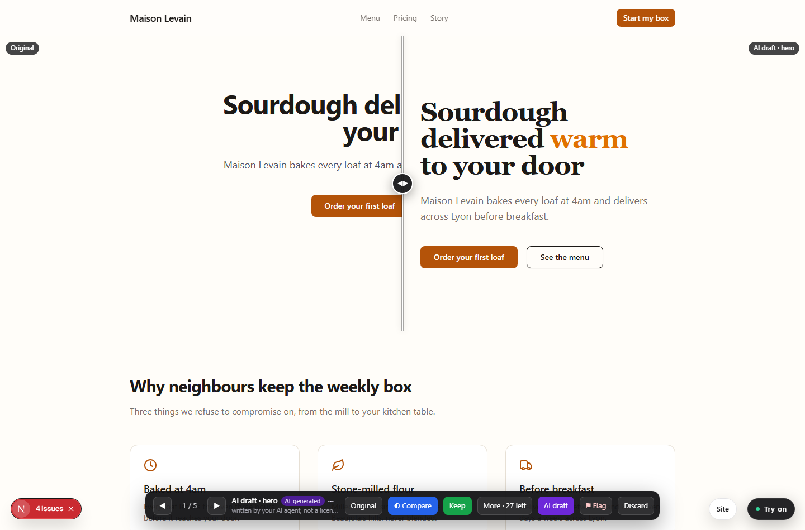
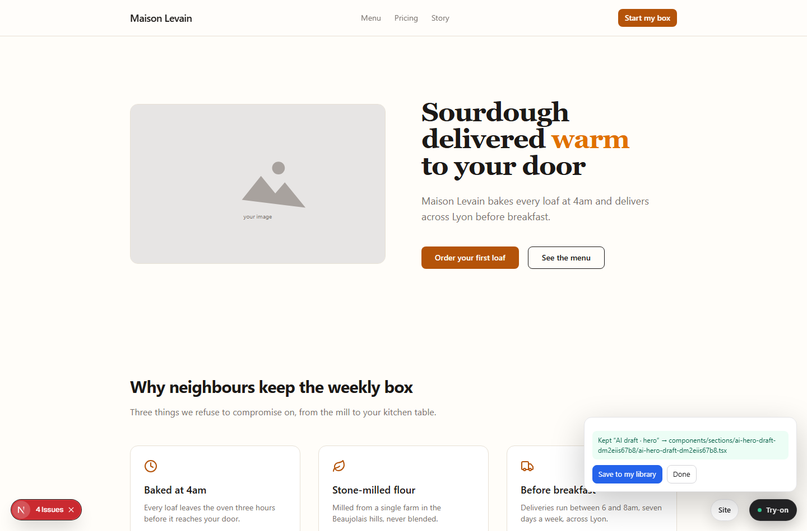
components/sections/ on Keep.7 · Tune · Site theme · Flags · Keep/Save · clean
Tune — deterministic and reversible
| Claim | Measured |
|---|---|
| CLI and browser produce the same transform | cliAiry == browserAiry == fead738b0d437509… — byte-identical for the same preset |
| Live feedback text | "Live on the page (3 class changes). Keep it, or Reset." / "Kept in components/hero.tsx." / "Back to the original (byte-exact)." — exactly as documented |
| Reset is byte-exact | resetByteExact:true, mergedResetByteExact:true — the file returned to the session's origin snapshot |
| Every set recomputes from the original | re-applying the preset yielded the same dials [3,1,3]; merged state reported {density:1} — no cumulative drift |
| Keep commits (reset no longer reverts it) | finalIsKeptAiry:true, finalIsOriginal:false |
| Surgical reset when you edited meanwhile | mode:"surgical (your edits kept)" — and it reported honestly: undone:0, left:1 + "1 class change(s) could not be matched — check components/cta.tsx" instead of clobbering |
Site theme — 10-deep undo, exactly
| Claim | Measured |
|---|---|
| Preview writes nothing | cssAfterPreviewOnly == cssBefore (same sha), yet the change was visibleWithoutReload:true |
Apply writes a /* dh:theme */ block | cssAfterApply != cssBefore; block carries a metadata comment {"accent":"#0f766e","neutrals":"cool","corners":"soft","density":"snug","headlines":"larger"} and oklch() variable values |
| Undo is byte-exact | undoByteExact:true |
| 10-deep history | 11 applies succeeded → only 10 undos succeeded → the 11th returned {"ok":false,"code":"NO_UNDO","message":"nothing to undo"} exit 1 |
| Invalid knobs refused | BAD_THEME exit 1 for --corners wobbly, --accent notacolour, --neutrals beige, --body ComicSans |
| Arbitrary hex accent accepted | --accent #0f766e --neutrals cool --corners soft --density snug --headlines larger → exit 0 |
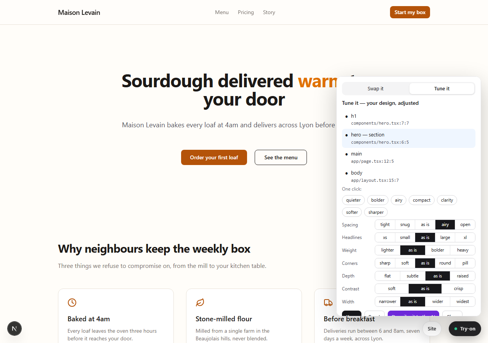
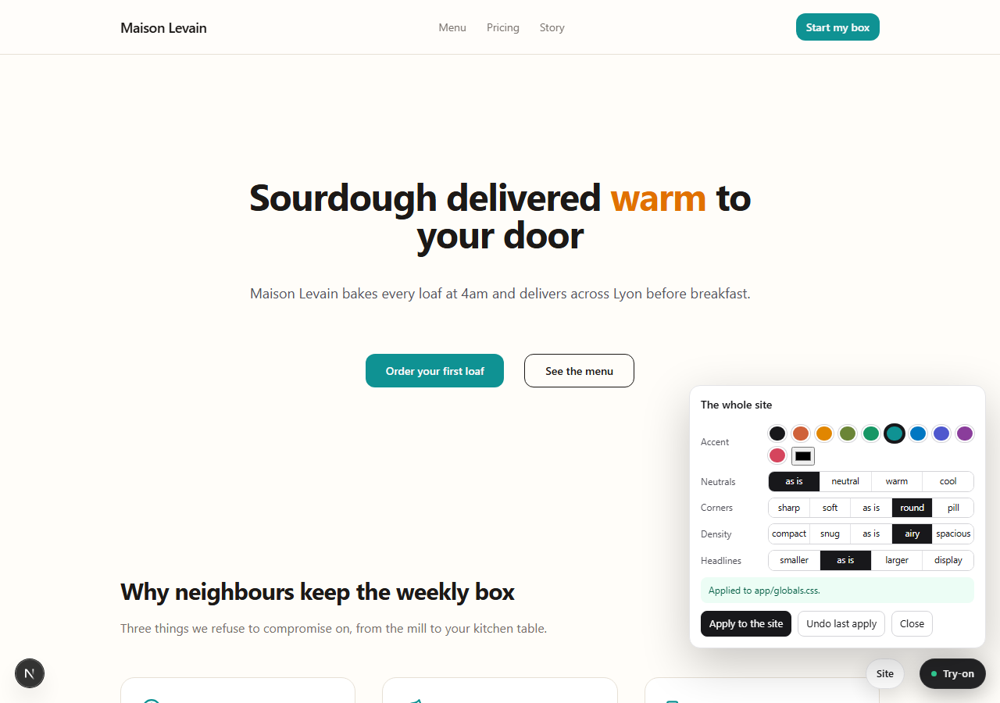
Flags
| Step | Measured |
|---|---|
| Reason list | 8 reasons, with the slot substituted: "it is not a pricing at all" |
| Add #1 → #2 | badge shown:none → ⚑ Flagged1 → ⚑ Flagged2; disk count 1 → 2; ids F0c4de1b4, F0aa71234 |
| Clear | {"ok":true,"cleared":2,"total":0} → disk flags:[] → CLI flags list returns [] (an earlier "still 2" reading in an agent log was a stale capture, not a defect) |
| Report when empty | exit 1, NO_FLAGS: "nothing is flagged yet: flag a variant from the try-on bar (⚑ Flag)" |
| Report content | a full reproduce package: where (file/line/col/session/idx), variant (licence, source URL, deps, fit), the exact usage, owner.jsx + all units, design.slots demo values, the full design code, auto checks, env (deckhand 2.3.0, catalog 2026-09-27, next, radix, tailwind 4) |
| Auto-check prefills the flag | the record's auto.missing listed exactly the owner words the variant dropped ("Free first delivery", "Pause any week") |
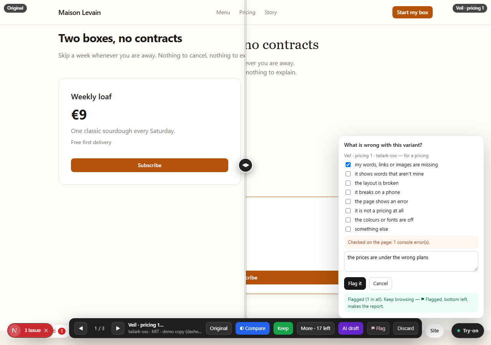
Keep · Save · clean
| Claim | Measured |
|---|---|
| Keep bakes and graduates | toast Kept "Veil · pricing 1" → components/sections/tailark-oss-veil-pricing-1/…; pricingShaBefore ≠ pricingShaAfterKeep; session → kept |
| Save to personal library | toast Saved — ranks first next time; row mine/adjust-pricing-fud6@radix; files [card.tsx, tailark-oss-veil-pricing-1.tsx] |
| Refusals | BAD_NAME (--name x), NO_SESSION (unknown id) — exit 1 |
clean unwires byte-exact | {"ok":true,"discarded":["s21075"],"restored":["next.config.ts (byte-exact)"],"tokens":"kept (kept variants use them)","restartDevServer":true}; sha(next.config.ts) after == its original backup |
| Token layer kept only if a kept section uses it | globalsCssTokensKept:true (a kept pricing variant needed it); journal + runtime removed; theme dir removed |
prod-clean: no stamps in the build | after clean + dev restart: 0 data-dh attributes and no overlay script tag in the served HTML (page 200) |
Kept tunes survive clean | hero.tsx still differs from pristine and its tune state reads state:kept — correct, keep is a commitment |
clean does not remove the .deckhand/tryon/ line it appended to .gitignore (sha unchanged before/after). (2) Right after clean, doctor still reports stampsInHtml:true because the dev process is still running the loader — it only goes to 0 after the restart that clean tells you to do.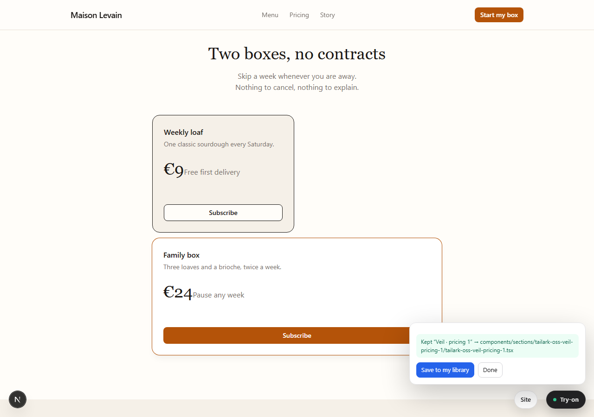
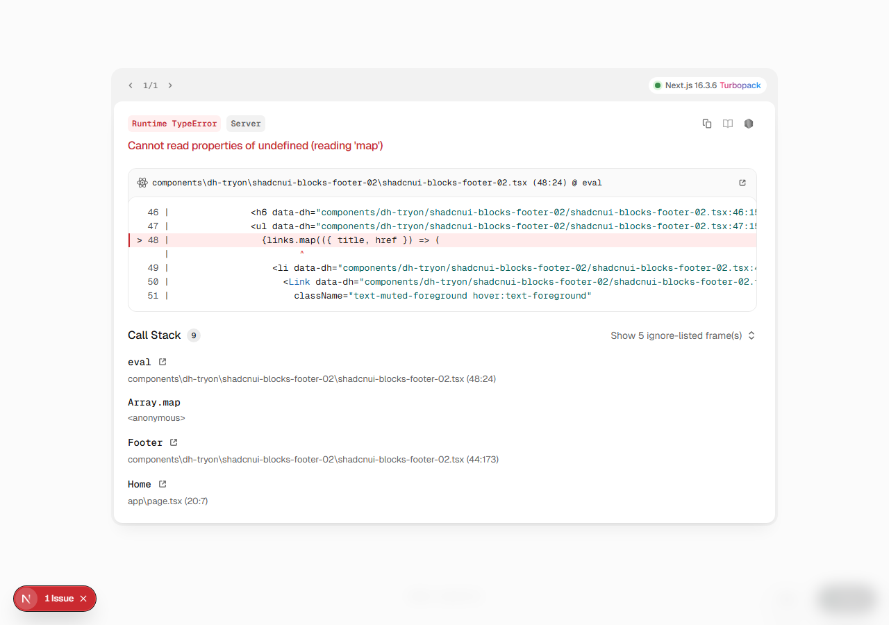
8 · BLOCKER — staging a footer design returns HTTP 500
$ node tryon/cli.mjs try --file components/footer.tsx --line 30 --col 5 \
--slot footer --count 4 --project <site>
{"ok":true,"id":"s7278c","state":"open","shown":1,
"variants":[… idx 4 = shadcnui-blocks/footer-01 …],
"skipped":[{"id":"…mist-footer-1","why":"POOR_FIT"}, …]}
exit 0| Probe | Before staging | After try | After discard |
|---|---|---|---|
| dev server :3000 | 200 · 51902 bytes | 500 · error page | 200 · 51902 bytes |
| try-on proxy :4010 | 200 · 51997 bytes | 500 · error page | 200 · 51997 bytes |
try exit code | — | 0 (ok:true) | — |
TypeError: Cannot read properties of undefined (reading 'map')
at …/components/dh-tryon/shadcnui-blocks-footer-01/shadcnui-blocks-footer-01.tsx [app-rsc]
at Array.map
at Footer (…shadcnui-blocks-footer-01.tsx [app-rsc])The engine's own fit data explains it: that variant reported hidden: ["footerSections: the design's demo columns hidden (6) — no menu in your plan"]. Hiding the demo columns leaves the array the component then calls .map() on as undefined.
Why the documented safety net did not fire corrected on review
Review: the explanation below is wrong. try was run without --url (and without dh dev start), so no page was loaded at all. With a dev URL the check treats the 500 as a build error, drops the culprits and restores the file. The first paragraph is kept as written.
The atlas's Fig 15.1 step 6 claims openVerified does "parse → ONE wrapper write → probe page → build error? exclude culprits, retry ≤2 (3 attempts) else restore the file". Here the compile succeeds and the render fails, so the probe passed and the file was left in place. Through the browser the overlay then sat waiting for [data-dh-session] and hit a 420 s timeout with pageErrors: ["Cannot read properties of undefined (reading 'map')" ×2].
Second defect from the same run — orphaned files
When staging fails mid-way, the variant folders it already wrote are stranded: 5 directories under components/dh-tryon/ were referenced by no session at all (shadcnui-blocks-footer-02, shadcnui-blocks-footer-03, smoothui-footer-1, tailark-oss-mist-footer-3, tailark-oss-veil-footer-3), and a later discard could not remove them because it only knows what its session recorded.
Workaround
discard restores the file byte-exact and the page recovers immediately (200). The safe path today is to avoid shadcnui-blocks/footer-01, or to stage with --only excluding it.
9 · Findings & corrections for the atlas
| # | What I found | Effect |
|---|---|---|
| 1 | shadcnui-blocks/footer-01 crashes SSR → page 500 while try says ok:true; failed staging strands orphan variant folders | blocking defect |
| 2 | ◐ Compare is ON by default (overlay.js:116) — the original and the variant are painted together as a before/after split | atlas §13/§14 never states this; without it a reviewer reads "two heroes" as a bug |
| 3 | The slot is pre-guessed before the owner touches the dropdown (8/8 correct here) | atlas wording implies the owner chooses |
| 4 | blog has no licensed entries and is labelled blog — AI draft only, which flips the primary button to Ask AI to draft one | atlas lists the slot vocabulary without noting any AI-draft-only ones |
| 5 | ELEMENT_NOT_FOUND message is misleading: wrapping moves the element (faq 18:5 → 22:5), so retrying the same coordinates fails with "the page is older than the file: reload it and pick again" — but reloading will not help while a session is open | misdiagnosis; should say "already inside an open try-on session" |
| 6 | Sub-actions must precede options for flags/seo/registry (they read argv[1]): flags --project list → exit 2 USAGE, while flags list --project works | argument-order gotcha; dh tryon flags list is fine because --project is appended last |
| 7 | AI-draft problems are reported per stage (first failing group), so multiple fix/re-run rounds may be needed | atlas says a rejection "lists every problem" |
| 8 | Staged designs can emit React warnings: hero variants logged Invalid DOM property flood-opacity / flood-opacity → floodOpacity, color-interpolation-filters, stop-color. The overlay's auto-check counts console errors, so these can prefill a flag | minor quality issue in staged SVG code |
| 9 | Demo brand logos land in the owner's source (spotify.tsx, vercel.tsx, supabase.tsx, hulu.tsx, firebase.tsx, claude.tsx, bolt.tsx) — but 29 data-dh-demo marks are applied to them while the owner's own wrapper carries 0 | working as designed; worth stating the volume explicitly |
| 10 | clean leaves its own .gitignore line behind, and doctor still says stampsInHtml:true until you restart | cosmetic |
| 11 | The skill's fixture site is not runnable — no app/layout.tsx, no PostCSS config, no lockfile, no node_modules (tests stub the deps) | hand-testing needs a root layout + postcss.config.mjs with @tailwindcss/postcss first |
| 12 | Stale server on :3999 for another project caused EADDRINUSE while an old overlay kept answering | operational hazard; always verify the proxy target |
Claims that held up completely
- Zero model calls per click — cycling is pure DOM; 0 file writes measured on all 7 working sections.
- Loopback-only + per-run token —
:4010refused on the LAN IP while the dev server bound::; requests withoutx-dh-token→ 403BAD_TOKEN. - Typed refusals return HTTP 200 —
keepwithout an id → 200{ok:false,code:"NO_SESSION"}; bad id → 200BAD_ID; unknown API → 404NO_SUCH_API. - SSE is token-guarded —
/__dh/events→ 403 without token, 200text/event-streamwith it (first frame: ok). - Byte-exact reversibility — discard, tune reset, theme undo,
cleanunwire all restored exact sha256s. - 10-deep theme history — 11 applies, 10 undos, then
NO_UNDO. dh tryon …passthrough — exit codes verbatim (0 ok / 1 refusal / 2 usage),--projectappended automatically.- Overlay re-attaches every 1 s, HMR renders file writes live, stamps are dev-only.
10 · Reproduce
# 0. a site with a root layout + postcss.config.mjs (the shipped fixture has neither)
npm install
node tryon/cli.mjs doctor --project <site>
node tryon/cli.mjs setup --project <site> # then RESTART the dev server
node tryon/cli.mjs serve --project <site> --port 4010 # open http://127.0.0.1:4010
# swap (verified headless too)
node tryon/cli.mjs try --file components/pricing.tsx --line 20 --col 5 \
--slot pricing --count 4 --project <site>
node tryon/cli.mjs status | keep --id s1ce35 --idx 1 | discard --id s1ce35 --project <site>
# THE BUG
node tryon/cli.mjs try --file components/footer.tsx --line 30 --col 5 \
--slot footer --count 4 --project <site> # exit 0, ok:true
curl -s -o /dev/null -w "%{http_code}\n" http://127.0.0.1:3000 # 500
node tryon/cli.mjs discard --id <id> --project <site> # back to 200
# AI draft gates
node tryon/cli.mjs draft --file components/features.tsx --line 23 --col 5 --slot features
node tryon/cli.mjs draft-check --id <id> # DRAFT_RAW_COLOR / DRAFT_LINK / DRAFT_DROPPED_CONTENT
node tryon/cli.mjs draft-done --id <id>
# theme history depth
node tryon/cli.mjs theme --corners round --density airy # ×11, then:
node tryon/cli.mjs theme --undo # 11th → NO_UNDO (exit 1)
# prod-clean
node tryon/cli.mjs clean --project <site> # then restart dev, count data-dh= → 0Method. Everything above was executed — no claim is inferred from reading source alone unless marked as such. Browser runs used Playwright 1.63.0 + Chromium (headless) against four isolated Next.js projects; file effects were checked with sha256 over the source tree; CLI behaviour was checked through both node tryon/cli.mjs and the dh tryon … passthrough. Raw captures live in <lab>/reports/*.json; 19 screenshots are in ./tryon-test-evidence/.
Deckhand try-on test report · skill v2.3.0 · catalog 2026-09-27 · 1,247 indexed designs, 980 base-compatible across 58 slot kinds.